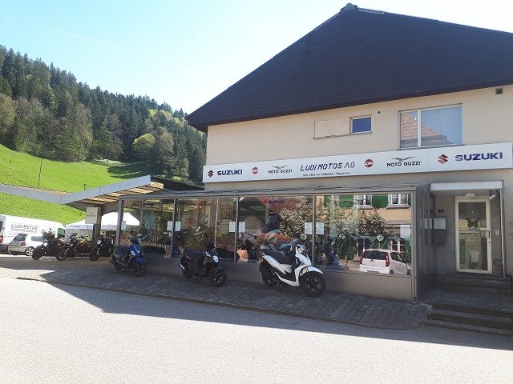
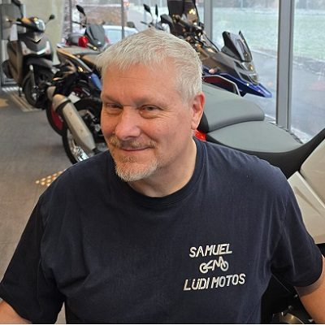
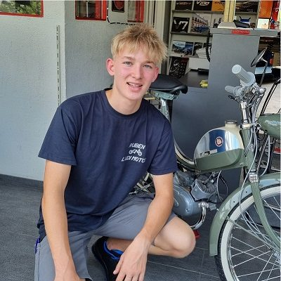

David Röthlisberger
GeschäftsführerDavid ist seit Sommer 2016 bei Lüdi Motos und seit 2021 Geschäftsführer. Als Fachmann in der Werkstatt hat er sowohl die Lehre als Polymechaniker als auch die als Motorradmechaniker erfolgreich abgeschlossen.
Fast 50 Jahre Yamaha, zehn Jahre Moto Guzzi, seit 2018 Suzuki und SYM. Unsere Geschichte ist der Grund, warum wir uns mit so vielen Marken besonders gut auskennen.

Bei uns sprichst du direkt mit den Leuten, die an deinem Motorrad arbeiten.
David ist seit Sommer 2016 bei Lüdi Motos und seit 2021 Geschäftsführer. Als Fachmann in der Werkstatt hat er sowohl die Lehre als Polymechaniker als auch die als Motorradmechaniker erfolgreich abgeschlossen.

Samuel hat Lüdi Motos 2011 von Andreas Lüdi übernommen. Neben Arbeiten in der Werkstatt kümmert er sich vor allem um Verkauf und Administration. Er ist Mechaniker mit Weiterbildung zum Maschineningenieur HTL.

Ruben absolviert seit August 2024 bei uns die vierjährige Lehre als Motorradmechaniker EFZ.
Lüdi Motos wird Vertretung von Yamaha, bis Ende der 1990er-Jahre zusammen mit Honda.
Ab jetzt sind wir exklusive Vertretung der Marke Yamaha.
Samuel Röthlisberger übernimmt Lüdi Motos von Andreas Lüdi.
Wir werden offizieller Partner der italienischen Traditionsmarke Moto Guzzi.
David Röthlisberger kommt im Sommer ins Team.
Neu nehmen wir die Zweiräder von Suzuki und SYM ins Programm auf. Die Yamaha-Vertretung endet nach fast 50 Jahren.
David Röthlisberger übernimmt die Geschäftsführung.
Ruben Imhof beginnt seine Lehre als Motorradmechaniker EFZ. Die Moto-Guzzi-Partnerschaft endet. Als unabhängiger Spezialist bleiben wir für Moto Guzzi und Yamaha da.
Du findest uns an der Verbindungsstrasse Lützelflüh–Schafhausen, knapp 100 m vom Bahnhof Schafhausen entfernt.